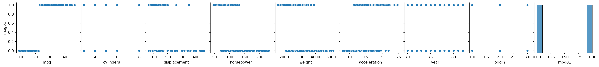
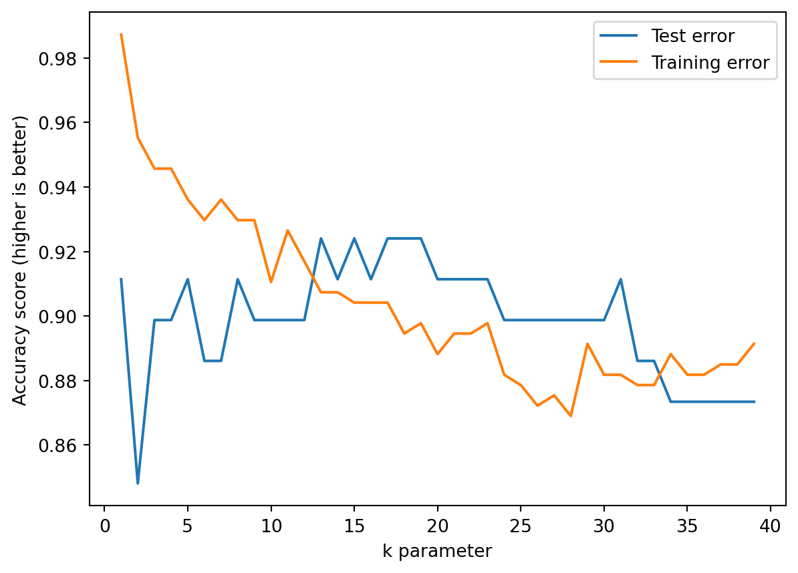

To remedy this, must call read_csv again, but with the special na_values argument. Moreover, we remove all rows containing na using the dropna method.
auto = pd.read_csv("data/Auto.csv", na_values="?").dropna()
(a)
Create a binary variable, mpg01, that contains a 1 if mpg contains a value above its median, and a 0 if mpg contains a value below its median. You can compute the median using the median() method of the data frame. […]
The column mpg01 can be inserted as follows. Observe the 1*-trick, which converts boolean values (TRUE/FALSE) into 1 and 0.
import numpy as npimport pandas as pdauto["mpg01"] =1*(auto["mpg"] > auto["mpg"].median())
(b)
Explore the data graphically in order to investigate the association between mpg01 and the other features. Which of the other features seem most likely to be useful in predicting mpg01? Scatterplots and boxplots may be useful tools to answer this question. Describe your findings.
The pairplot function from seaborn is what we want. Since we’re mainly interested in the association between the covariates and mpg01, we may use the argument y_vars to restrict the pairplot to these variables; but be aware that plots with categorical values tend to not very informative.
import seaborn as snsimport matplotlib.pylab as pltsns.pairplot(auto, y_vars = ["mpg01"])plt.show()

What do we see? First, mpg is strongly associated with mpg01, but that’s by definition. The other plots are hard to read. It might help to look at a correlation matrix instead.
auto.corr()
mpg
cylinders
displacement
horsepower
weight
acceleration
year
origin
mpg01
mpg
1.000000
-0.777618
-0.805127
-0.778427
-0.832244
0.423329
0.580541
0.565209
0.836939
cylinders
-0.777618
1.000000
0.950823
0.842983
0.897527
-0.504683
-0.345647
-0.568932
-0.759194
displacement
-0.805127
0.950823
1.000000
0.897257
0.932994
-0.543800
-0.369855
-0.614535
-0.753477
horsepower
-0.778427
0.842983
0.897257
1.000000
0.864538
-0.689196
-0.416361
-0.455171
-0.667053
weight
-0.832244
0.897527
0.932994
0.864538
1.000000
-0.416839
-0.309120
-0.585005
-0.757757
acceleration
0.423329
-0.504683
-0.543800
-0.689196
-0.416839
1.000000
0.290316
0.212746
0.346822
year
0.580541
-0.345647
-0.369855
-0.416361
-0.309120
0.290316
1.000000
0.181528
0.429904
origin
0.565209
-0.568932
-0.614535
-0.455171
-0.585005
0.212746
0.181528
1.000000
0.513698
mpg01
0.836939
-0.759194
-0.753477
-0.667053
-0.757757
0.346822
0.429904
0.513698
1.000000
Now we see a sizeable correlation between mpg01 and most covariates, with the relatively high 0.32 for acceleration being the highest. Also observe that cylinders, weight, horsepower, and displacement are highly correlated. Recall that we call this multicollinearity, and it’s best not to use all of them in a single model.
(c)
Split the data into a training set and a test set.
This is most easily done using train_test_split. But first we need to remove every covariate we don’t need from auto. This includes mpg0, mpg, and name.
Perform LDA on the training data in order to predict mpg01 using the variables that seemed most associated with mpg01 in (b). What is the test error of the model obtained?
Due to high multicollinearity we go only with cylinders, not cylinders, weight, horsepower, and displacement. We also include acceleration, origin, and year due to their clear associations. There are many valid solutions to this exercise! You need to show that you understand how to select reasonable variables and that you know about multicollinearity.
from sklearn.discriminant_analysis import LinearDiscriminantAnalysis as LDAfeatures = ["cylinders", "acceleration", "origin", "year"]fit = LDA().fit(X_train[features], y_train)
We find the test error using the score method.
from sklearn.discriminant_analysis import LinearDiscriminantAnalysis as LDAfit = LDA().fit(X_train[features], y_train)LDA_score = fit.score(X_test[features], y_test)LDA_score
0.9240506329113924
(e)
Perform QDA on the training data in order to predict mpg01 using the variables that seemed most associated with mpg01 in (b). What is the test error of the model obtained?
We do the same as last time, but with QDA instead of LDA.
from sklearn.discriminant_analysis import QuadraticDiscriminantAnalysis as QDAfit = QDA().fit(X_train[features], y_train)QDA_score = fit.score(X_test[features], y_test)QDA_score
0.9367088607594937
The QDA score is better than the LDA score.
(f)
Perform logistic regression on the training data in order to predict mpg01 using the variables that seemed most associated with mpg01 in (b). What is the test error of the model obtained?
from sklearn.linear_model import LogisticRegression as Logitfit = Logit().fit(X_train[features], y_train)logit_score = fit.score(X_test[features], y_test)logit_score
0.8987341772151899
(g)
Perform logistic regression on the training data in order to predict mpg01 using the variables that seemed most associated with mpg01 in (b). What is the test error of the model obtained?
from sklearn.naive_bayes import GaussianNB as NBfit = NB().fit(X_train[features], y_train)nb_score = fit.score(X_test[features], y_test)nb_score
0.9113924050632911
(h)
from sklearn.neighbors import KNeighborsClassifier as KNNknn_test_scores = [KNN(k).fit(X_train[features], y_train).score(X_test[features], y_test) for k inrange(1,40)]
Let’s plot the knn_scores; see Figure 2.17 in the book. To do this we need the training error too:
from sklearn.neighbors import KNeighborsClassifier as KNNknn_train_scores = [KNN(k).fit(X_train[features], y_train).score(X_train[features], y_train) for k inrange(1,40)]
Then we can plot a similar plot as Figure 2.17. This plot demonstrates the difference between training and test error and allows us to choose a reasonable value for \(k\).
import matplotlib.pylab as pltplt.clf()plt.plot(np.arange(1,40), knn_test_scores, label="Test error")plt.plot(np.arange(1,40), knn_train_scores, label="Training error")plt.xlabel("k parameter")plt.ylabel("Accuracy score (higher is better)")plt.legend(loc="upper right")plt.show()

It appears that \(k\) between \(\approx15\) and \(\approx20\) would work well. The accuracy for \(k=16\) is